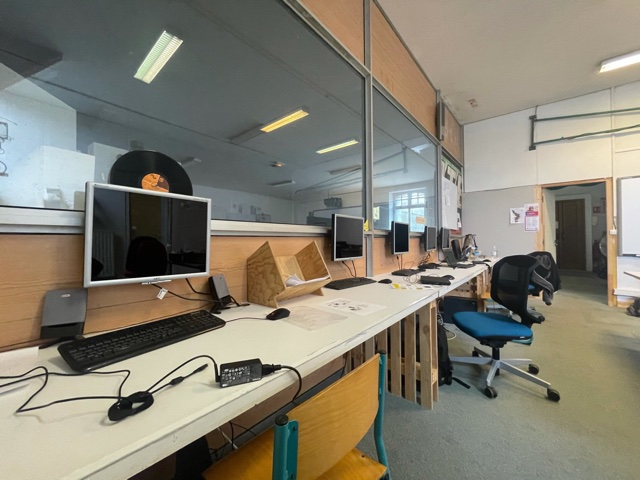
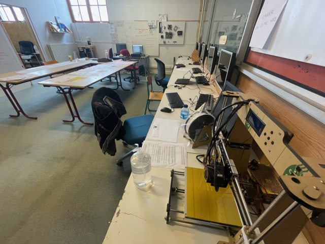
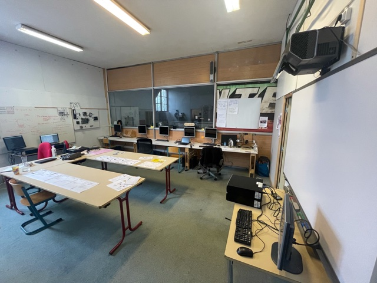

Le chantier
Le chantier d'insertion numérique La Capsule par l'ULAMIR-CPIE Pays de Morlaix ouvre ses portes aux jeunes entre 18 et 30 ans, afin de les conduire vers la professionnalisation via des activités liées au numérique.

Depuis octobre 2020, le chantier permet à 5 jeunes de bénéficier d'un CDD reconductible, dans le but de les connecter au monde du travail.

Le semaine s'effectue sur 4 jours :
- Lundi
- Mardi
- Jeudi
- Vendredi
Le temps de travail est de 26 heures/semaine.

Ce chantier s'articule autour de 4 temps principaux :
- Découverte des filières professionnelles
- Projets personnels
- Projets collectifs
- Production
- En raison du contexte sanitaire actuel, la découverte des métiers s'effectue en comité restreint ou en vidéo-conférence. (voir Rencontres)
- Les temps dédiés aux projets personnels permettent aux jeunes de découvrir des techniques professionnelles et de les appliquer sur des projets plus ou moins poussés. (voir Projets)
- Les projets collectifs sont en lien avec la volonté de La Capsule de participer à l'inclusion numérique des publics les plus éloignés de l'outil informatique. (voir Ateliers)
- La partie production concerne activités de logistique, de diagnostic/réparation de matériel informatique, l'utilisation de machines à commandes numériques. (type imprimante 3d)